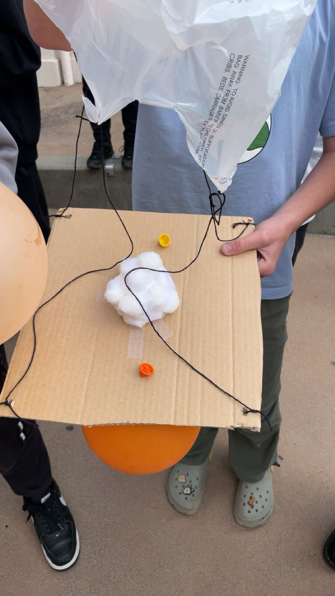

1/19/24 this week we learned about chemical engineering we also made ooblek which we lerned that when u take ooblek when its liquidy and move it around it will become hard.i had basketball practice this week i rolled my ankle and also i made a shot for my girl.
1/26/24 this week we are making mousetape car which uses a rod to pull a string that makes the axul turn and the DVD as that wheel to rotat and we also lerned about the ratio of how much long needs the rod to be and the ratio of how long the wheel will turn using the ratio of the cars rod and axul.
2/13/24 this week where just gunna be working on our cars and improving them to there limmits and like we calculate. me and anthony moved the spot of the mouse trape and made the rode longer. we are gunna make it longer as in the body and u we have to extend the rod and glue that on to the mouse trape.
3/4/24 this week we worked on the egg drop our team us done and we just have to bulid it now but we had so many drafts.we had to think it through because the fall is big but there is a slit chace that we will pull it off but the problem is that we are limited on tape and also we have to make the trash bag work or else its not gunna work and we will fale.
2/5/24 we worked on the mouse trap car me and anthony worked very hard for our cars but we had alot of problems but we solve each and every one.one of our problems where that we did not have enough time to make our third car and that is because of me because i smashed it on the ground because it wasn't working,
3/13/21 this week we did the egg drop and we did not do a good job. we did bad because we droped it close to the edge but we had a small crack in that non serving drop we where superised. this week I am gunna do to a car meet and going to go out with my girl but also i am going to go to lake arowhead again we are goint to go with our cousins but i might go to big bear when there. 
4/15/24 we started the final project we have to make a bout that flouts we are gunna make a bout that makes it from one side the pool to the other. last weeks chalange was to make a bridge from stiky notes this was very hard but me and anthony still puled it off we never fail but if we do its cuz of the wind